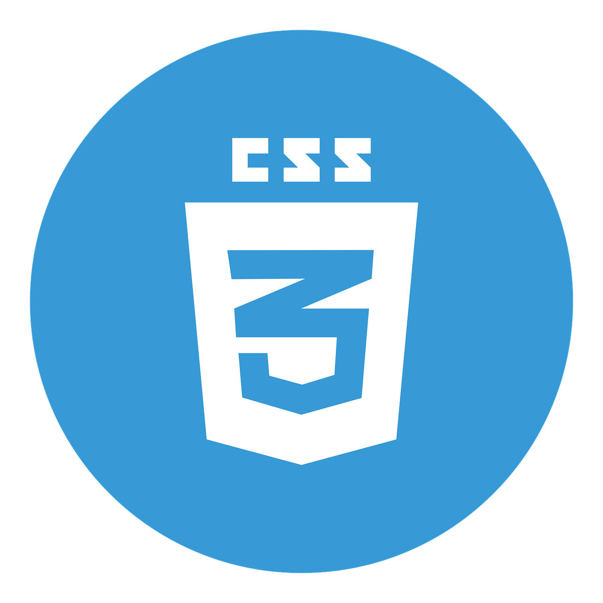
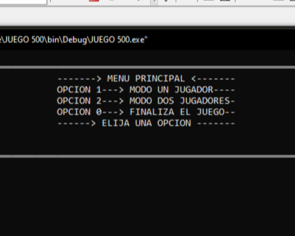
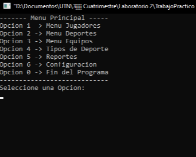
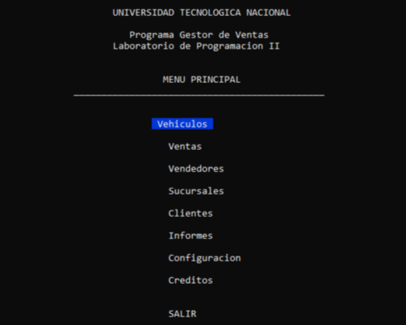
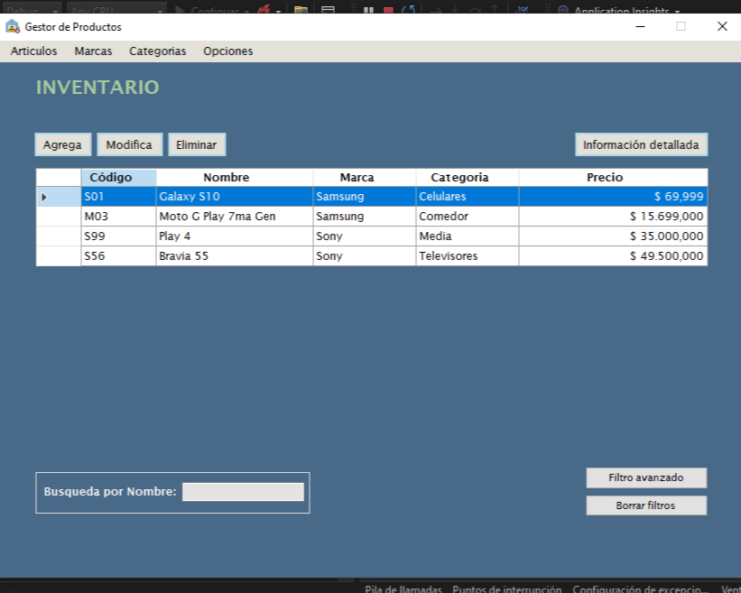

Conocimientos



Actualmente, estoy cursando la Tecnicatura en Programación en la UTN, donde he adquirido conocimientos sólidos en lenguajes como C++, C#, .NET, HTML, CSS y SQL. Mi pasión por el desarrollo va más allá de lo que aprendo en clases: disfruto investigando, buscando soluciones innovadoras y mejorando continuamente mis habilidades. A lo largo de mis estudios, he trabajado en diversos proyectos académicos que me han permitido aplicar los conceptos aprendidos en situaciones reales. Aunque estos proyectos han sido parte de mi formación, mi objetivo es seguir creciendo como profesional, explorando nuevas tecnologías y fortaleciendo mis capacidades.

He tenido la oportunidad de desarrollar varios proyectos que me han permitido aplicar y fortalecer mis conocimientos: Juego "500" (C++): Creé un juego de consola basado en el clásico juego de cartas "500". El cual me permitió profundizar en el uso de estructuras condicionales, bucles y gestión de menús. Gestor de Torneos (C++): Desarrollé un gestor para la organización y seguimiento de torneos deportivos. Este sistema permitía registrar equipos, gestionar rondas y presentar estadísticas. Gestor de Ventas para una Concesionaria (C#): En equipo, implementamos un sistema de gestión de ventas para una concesionaria de vehículos. Este proyecto incluyó módulos para manejar inventarios, clientes y facturación. Gestor de Mercadería (.Net y SQL): En este proyecto grupal, desarrollamos un sistema para la gestión de inventarios y productos en una tienda. Cada imagen lleva al repositorio de Github donde se encuentran sus codigos correspondientes.



